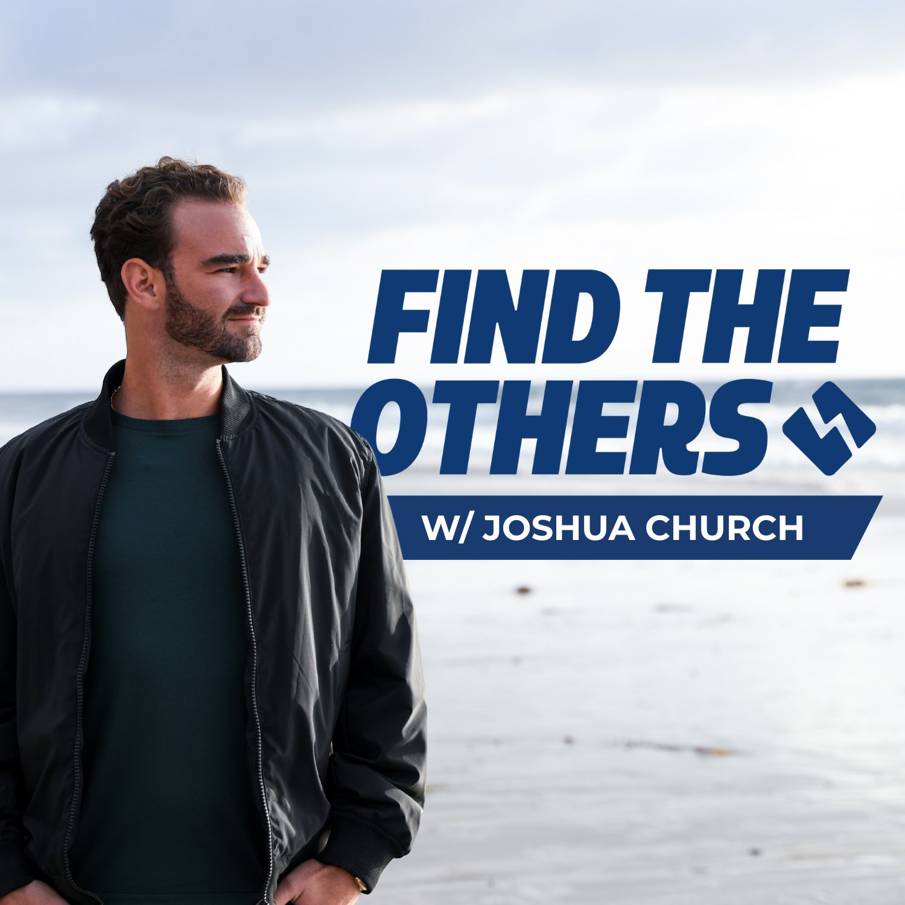

The Podcast
Find The Others
Where ambition meets inner peace. Pull up a seat. You've found The Others.

Where ambition meets inner peace. Pull up a seat. You've found The Others.

The ones striving for big things without sacrificing their peace. The ones doing the inner work while building something meaningful. Hosted by Forbes 30 Under 30 founder and author Joshua Church, each episode brings real-time reflections, insights, and conversations exploring the science of achievement and the art of fulfillment.
If you're ready to play at a higher level—in business, health, relationships, and life—welcome.
You've found The Others.
"Admit it. You aren't like them. You're not even close. You may occasionally dress yourself up as one of them, watch the same mindless television shows as they do, maybe even eat the same fast food sometimes. But it seems that the more you try to fit in, the more you feel like an outsider, watching the 'normal people' as they go about their automatic existences. For every time you say club passwords like 'Have a nice day' and 'Weather's awful today, eh?', you yearn inside to say forbidden things like 'Tell me something that makes you cry' or 'What do you think deja vu is for?'. Face it, you even want to talk to that girl in the elevator. But what if that girl in the elevator (and the balding man who walks past your cubicle at work) are thinking the same thing? Who knows what you might learn from taking a chance on conversation with a stranger? Everyone carries a piece of the puzzle. Nobody comes into your life by mere coincidence. Trust your instincts. Do the unexpected. Find the others…" — Timothy Leary

Every day I share one message—an insight, a perspective, a tool, or a tidbit to help you on your way. It's a free community of people who are building lives on their own terms, supporting each other along the road. No noise, no spam. Just signal.